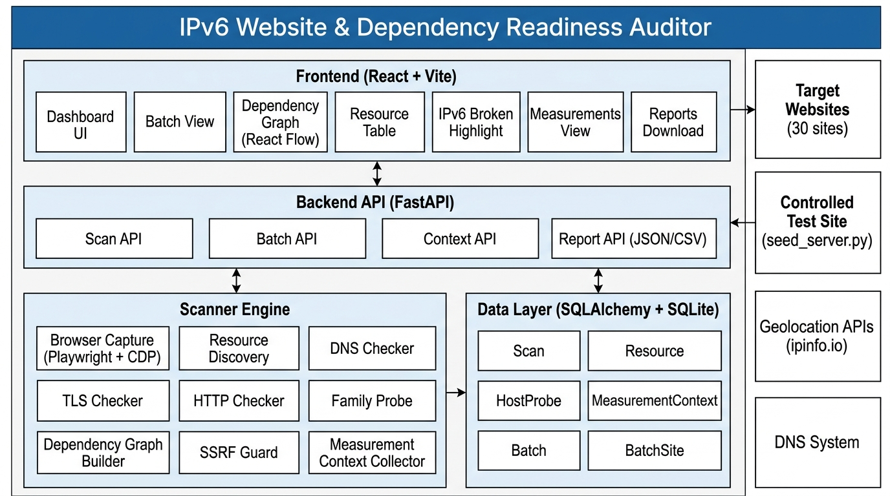
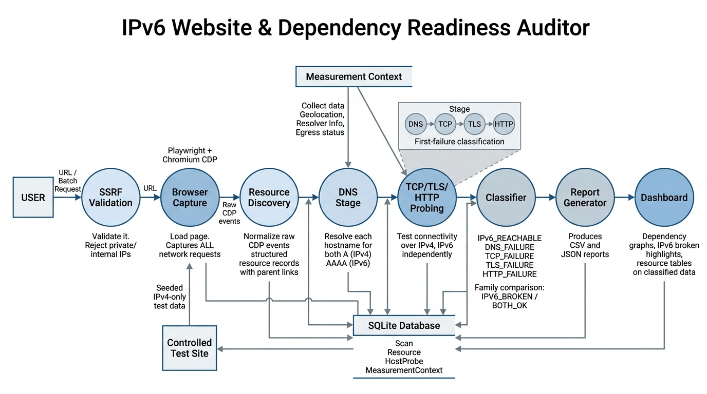

Clear outline of the problem being addressed.
A website is not fully IPv6-ready simply because its apex domain resolves to an AAAA record. Modern web pages depend on dozens of external sub-resources — scripts, stylesheets, fonts, images, and API endpoints — each served from a different hostname that may remain IPv4-only.
Inspired by the IETF webres6 initiative (SAP/webres6), this project builds a browser-based auditing tool that evaluates IPv6 reachability across 30 selected websites and their complete dependency trees, using actual browser resource loading rather than relying only on DNS records.
Context necessary to understand the problem and the proposed solution.
As of 2026, Google reports ~45% of global traffic reaches its services via IPv6 [1]. However, the long tail of web infrastructure — third-party scripts, ad networks, font CDNs, API endpoints — lags significantly behind. A single IPv4-only <script> tag can render a page non-functional on IPv6-only networks, even when the main domain is fully dual-stack.
Modern browsers use the Happy Eyeballs algorithm (RFC 8305) to race IPv4 and IPv6 connections, silently falling back to whichever succeeds first. This masks IPv6 failures on dual-stack hosts: the page loads fine, but its IPv6 path may be completely broken — invisible to both users and operators [2].
An AAAA record in DNS proves only that an IPv6 address is advertised. It says nothing about whether:
Each of these is a distinct failure stage with different operational implications.
The webres6 project [3] pioneered the concept of testing all sub-resources of a webpage for IPv6 readiness. Our tool extends this approach with browser-based resource discovery via CDP, per-family connectivity probing, and a controlled test site for ground-truth validation.
Study of existing proposals, standards, and tools relevant to this work.
| Reference | Type | Relevance to This Project |
|---|---|---|
| RFC 8305 – Happy Eyeballs v2 | RFC | Defines how browsers race IPv4/IPv6 connections. Our tool bypasses this by probing each family independently, revealing failures that Happy Eyeballs silently masks. |
| SAP/webres6 [3] | Tool | Pioneered sub-resource IPv6 checking for websites. We extend this with real Chromium-based resource discovery (CDP), 4-stage failure classification, and a controlled test site. |
| RFC 6555 – Happy Eyeballs v1 | RFC | Original dual-stack connection algorithm. Context for why dual-stack browsers silently hide IPv6 breakage. |
| RFC 6146/6147 – NAT64 & DNS64 | RFC | IPv6-only network translation mechanisms. Our SSRF guard explicitly handles NAT64 prefixes (64:ff9b::/96) to prevent address-smuggling attacks. |
| APNIC IPv6 Measurement [4] | Study | Ongoing large-scale IPv6 deployment tracking. Our 30-site selection includes APNIC and RIPE NCC for comparison with their own IPv6 readiness. |
| Chrome DevTools Protocol [5] | Spec | The Network.* domain events we capture via CDP give us every resource the browser actually requests, including initiator chains, redirect hops, and remote IPs. |
Detailed description of the overall solution.
We built a browser-based IPv6 readiness auditor that loads pages in a real Chromium browser, discovers every resource dependency, and independently probes each host over IPv4 and IPv6 through four distinct failure stages.
Playwright launches headless Chromium with CDP (Chrome DevTools Protocol) Network domain enabled. Every HTTP/HTTPS request is captured with initiator chains, redirect hops, remote IPs, status codes, and timing. This is actual browser resource loading, not synthetic DNS lookups.
Each discovered hostname is resolved for both A (IPv4) and AAAA (IPv6) records using dnspython. Measurement context is collected: scanner geolocation, resolver info, IPv4/IPv6 egress capability. An AAAA record is recorded as "advertised", never as "reachable".
Each (host, port, address family) is tested independently: DNS → TCP → TLS → HTTP. The first failing stage is recorded; later stages are NOT_REACHED. TCP and TLS run on the same socket to prevent confusion between stages.
Resources and hosts are assembled into a dependency graph with color-coded IPv6 verdicts (green/yellow/red/gray). Host nodes show both IPv4 and IPv6 chips for instant comparison.
A test site with deliberately seeded IPv4-only dependencies at each failure stage (DNS, TCP, TLS, HTTP) proves the classifier's accuracy. Automated tests verify every seeded failure is detected correctly.
Key optimizations and enhancements compared to existing approaches.
| Aspect | Existing Approaches (e.g. webres6) | Our Optimization |
|---|---|---|
| Resource Discovery | HTML parsing or static analysis to find linked resources | Real Chromium + CDP captures dynamically loaded scripts, XHR/fetch calls, lazy images, and iframe sub-resources |
| Failure Granularity | Binary pass/fail or DNS-only check | 4-stage pipeline (DNS → TCP → TLS → HTTP) with subtypes: TIMEOUT, REFUSED, CERT_VERIFY, SERVER_ERROR, etc. |
| IPv4 vs IPv6 Comparison | Tests only IPv6 or only checks AAAA presence | Probes both families independently per host:port, produces family_comparison: BOTH_OK, IPV6_BROKEN, IPV4_BROKEN, INCONCLUSIVE |
| Ground Truth | No controlled validation site | Controlled test site with seeded failures at each stage + automated detection tests (6 tests) |
| Security | Limited SSRF protection | Multi-layer SSRF guard: URL validation, DNS resolution check, IP blocklist, NAT64/6to4 unwrapping, route-level interception |
| Measurement Context | Rarely recorded | Full context: scanner geo, resolver IPs, egress capability, IPv4/IPv6 public IPs — stored per scan |
| Report Privacy | URLs exported as-is | Automatic redaction of API keys, tokens, JWTs in URL query parameters before export |


Development milestones and methodology.
| Phase | Milestone | Deliverables | Tests | Status |
|---|---|---|---|---|
| Phase 1 | Browser-based resource capture | Playwright + CDP integration, resource normalization, SSRF guard, parent-link tracking | ~30 | Done |
| Phase 2 | DNS & measurement context | Per-hostname A/AAAA resolution, geolocation, resolver info, egress preflight | ~25 | Done |
| Phase 3 | Per-family TCP/TLS/HTTP probing | 4-stage classifier, family_comparison, concurrent address probing | ~40 | Done |
| Phase 4 | Dependency graph & frontend | Graph builder, React + Vite dashboard, React Flow visualization | ~15 | Done |
| Phase 5 | Controlled test site | seed_server.py (4 failure modes), seeded.json, detection tests | 6 | Done |
| Phase 6 | 30-site batch scanning | Batch runner, sites.json (30 sites), concurrency control, API endpoints | ~18 | Done |
| Phase 7 | CSV/JSON reports | Report builders, URL redaction, per-scan and batch-level exports | ~27 | Done |
| Phase 8 | Dashboard polish & testing | Batch UI, IPv6-broken highlight, frontend test suite, E2E verification | 35 | Done |
Total: 220 tests (178 backend + 6 controlled-site + 35 frontend + 1 real E2E). All passing.
[1] Google. "IPv6 Adoption Statistics." Google IPv6 Statistics, 2026. Available: https://www.google.com/intl/en/ipv6/statistics.html
[2] D. Schinazi and T. Pauly. "Happy Eyeballs Version 2: Better Connectivity Using Concurrency." RFC 8305, IETF, December 2017. DOI: 10.17487/RFC8305
[3] SAP. "webres6 — IPv6 Website Resource Checker." GitHub Repository, 2024. Available: https://github.com/SAP/webres6
[4] G. Huston. "IPv6 Deployment and Measurement." APNIC Labs, 2026. Available: https://labs.apnic.net/ipv6/
[5] Google Chrome. "Chrome DevTools Protocol — Network Domain." Chrome DevTools Protocol Documentation, 2026. Available: https://chromedevtools.github.io/devtools-protocol/tot/Network/
[6] D. Wing and A. Yourtchenko. "Happy Eyeballs: Success with Dual-Stack Hosts." RFC 6555, IETF, April 2012. DOI: 10.17487/RFC6555
[7] M. Bagnulo, P. Matthews, and I. van Beijnum. "Stateful NAT64: Network Address and Protocol Translation from IPv6 Clients to IPv4 Servers." RFC 6146, IETF, April 2011.
[8] M. Bagnulo, A. Sullivan, P. Matthews, and I. van Beijnum. "DNS64: DNS Extensions for Network Address Translation from IPv6 Clients to IPv4 Servers." RFC 6147, IETF, April 2011.
IPv6 Website & Dependency Readiness Auditor
A3-PS027-TC039 · Akshay Kumar
akshaykumar90537@gmail.com
AIORI Hackathon 3 · October 5, 2026